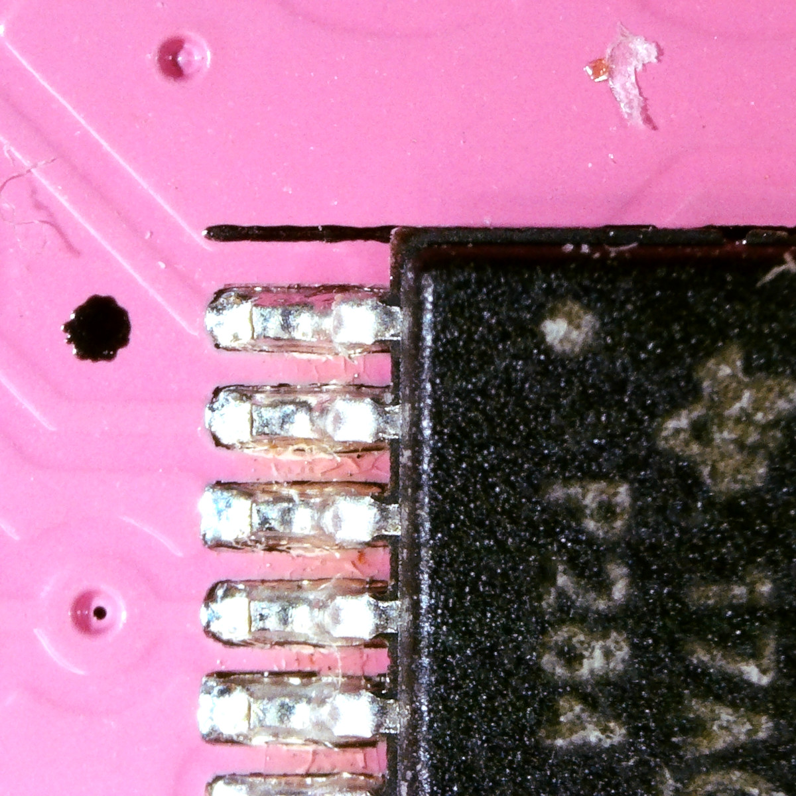

Helium surface mount build guide#
Welcome to the surface mount kit build guide for Helium. We hope you have a great time putting this module together and a wonderful time using it.
Please read all instructions thoroughly before starting. If you have questions or run into trouble please reach out to us on discord or drop us an email at support@winterbloom.com
Surface mount kits are expert level kits. You will have to solder 0603 and TSSOP-16 components. Helium is a good kit for folks wanting to get started with surface mount assembly, but you should take great care not to damage the board or components. We recommend watching tutorials on how to drag solder (such as this one from GreatScott!) and practicing with an inexpensive surface mount training board.
The part of the build can take about two hours to complete.
Tools and materials required#
Before you begin, make sure that you've got:
- Safety glasses. Yes, really.
- Proper ventilation- at least open a window or two.
- Tweezers, like these.
- A temperature-controlled soldering iron, like this one. It is very important to use a temperature-controlled iron, since unregulated irons can easily get hot enough to damage components. You should set your iron temperature based on your solder manufacturer's recommendations.
- Solder. We suggest using soldering with "no clean" flux. If you do use a different kind of flux, be sure to carefully clean the flux residue off based on the guidelines provided by the manufacturer of your solder. For an inexpensive option, we recommend Adafruit's SAC305 solder, and for a higher-quality option we recommend Kester 275 K100LD (the same solder we use).
- Solder wick.
- Flux. A convenient and easy option is a no-clean flux pen - we recommend SRA's refillable pens.
- A magnifying glass or fantastic eyesight.
If you want to be extraordinarily well prepared:
- A microscope. This can be useful for identifying any issues with soldering. A relatively inexpensive option is this one.
- A hot air station can be useful for undoing any soldering and is very helpful if you make a mistake like soldering a chip backwards.
Kit contents#
Your kit should contain the following items for surface mount assembly. If any are missing please email us at support@winterbloom.com. Note that your kit will also have the components needed for the through hole kit, but they aren't listed here for brevity.
- (1) Helium PCB
- (4) Blue LEDs
- (4) Red LEDs
- (2) 10uF capacitors
- (8) 0.1uF capacitors
- (2) Schottky barrier diodes
- (2) Ferrite beads
- (9) 50Ω resistors
- (6) 100kΩ 0.05% resistors
- (4) 1.5kΩ resistors
- (1) 1kΩ resistor
- (4) OPA4991 op amps
Precautions#
The LEDs and diodes must be installed in the correct orentation. The PCB and the components have corresponding marks on one side, make sure these are aligned.


Don't burn out your lights
Be careful when soldering the LEDs, as overheating or touching their lens with a soldering iron can melt and destroy them.
The ICs also have be installed in the correct orentation. The IC has a circle in one corner that designates pin 1. This should be matched with black circle or star on the PCB. The pictures in the assembly section also highlight pin 1 in green.

Assembly#
Helium has components on both sides of the PCB. The interactive tables and images below show how to place each component.
- Components are grouped by value so that you can work with one strip of components at a time.
- Click on a row to highlight components on the PCB image.
- Use the checkboxes to keep track of which components you've finished.
Inspection & cleaning#
Before moving on, take a moment to inspect the PCB and fixup any missing components or missing bridges. If you used solder or flux that requires cleaning then now is the time to clean your PCB according to the instructions provided by your solder or flux.
Next steps#
Congratulations, you put finished the surface mount assembly! Now that you've done the hard part, you can continue on to the through hole assembly to complete the build.